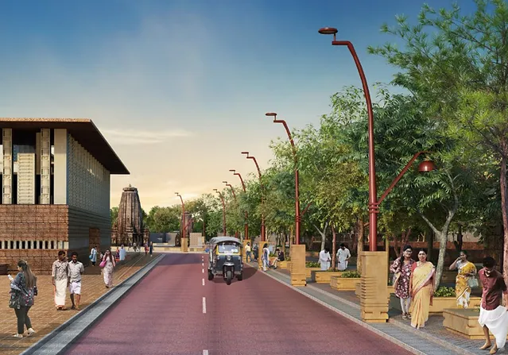
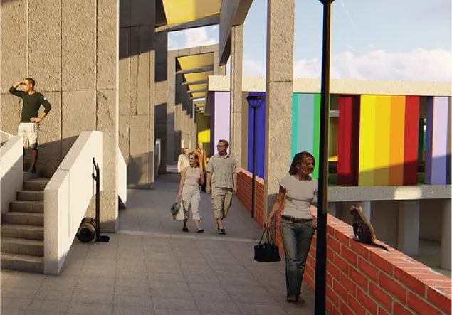

Work
About
Creating
spatial experiences
has always been at my heart, check out more of my architecture work on
Behance

Enhancing Pilgrim Experiences
Planning + Branding + Experience Design
City redevelopment of the oldest and the largest temple cities of India.

Uplifting the farmers of the nation.
Architecture + System Design + Identity Development
Redesigning the biggest wholesale fruit and vegetable market in Asia and using the opportunity to provide justice to the backbone of the Indian economy.
Next project